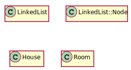
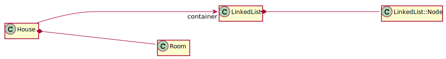
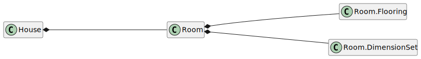
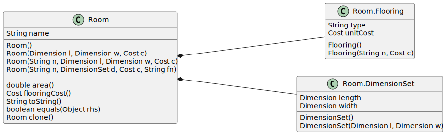
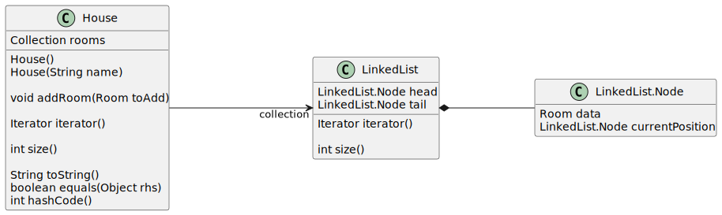
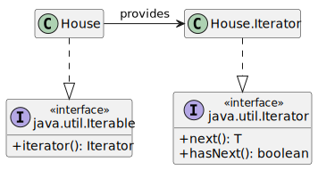

Language Checklists & UML Class Diagrams
Thomas Kennedy
One of the most difficult aspects of discussing object oriented code is visualizing the pieces. To visualize classes and ADTs we can use UML Class diagrams.
We will revisit Review 03 (Example 6) and build UML Class diagrams with PlantUML.
The recorded discussion is available here.
1 Keeping Track of the Pieces
Take another look through:
- Review 01, Review 02, and Review 03.
- Assignment 1
- Assignment 2
The number of classes (ADTs) ranges from 1 to 5. Think back to when you started Assignment 1. After reading the prompt:
- What was your first step?
- Where did you start?
- Did you try to examine all the pieces… at once?
The title of CS 330 is Object Oriented Programming and Design. We need a way to illustrate classes and objects. Let us start with UML Class diagrams.
2 Drawing UML Class Diagrams
You might be familiar with Dia or Draw.io. I quickly become frustrated by the amount of clicking required to create, or edit, even a basic UML Class diagram.
In class, and in the notes I reference Dia. As a Programmer–who likes vim and neovim–I like my keyboard, and dislike my mouse. For this discussion I will use PlantUML Class Diagram syntax. You can either:
- Set up PlantUML on your own machine
- Use a web interface
2.1 An (old?) Example
Let us revisit Review 03 Example 2. Let us start with some quick markup:
@startuml
hide empty members
class LinkedList {
}
class LinkedList::Node {
}
class House {
}
class Room {
}
@enduml
This markup will generate:

2.2 Refining the Diagram
If we think back to Review 03 Example 2, we will recall a number of connections between classes. Let us take a step back. We want to model the Big Picture.

@startuml
left to right direction
hide empty members
class LinkedList {
}
class LinkedList::Node {
}
class House {
}
class Room {
}
LinkedList *----- LinkedList::Node
House *----- Room
House ------> "container" LinkedList
@enduml
Are you surprised that I did not draw a connection between Room and LinkedList::Node? We want to capture the Big Picture. We do not want to capture everything, all at once, at the same time.
The Big Picture is not simply showing everything (or understanding every single piece). The Big Picture is understanding the high-level abstractions (ADTs). The low-level pieces (e.g., variables, algorithms) and implementation details should be examined on-the-fly as needed.
2.3 The Pieces & Remaining Coherent
We do not want a single monolithic UML Class diagram. We want a set of UML Class diagrams that each focus on one aspect of the system. I see two perspectives that we want to capture:
- Domain Specific Constructs (e.g., House and Room)
- Data Structures (e.g., House, LinkedList, and Node).
I think we should start with the first one. Let us take another look at Room.h from Review 03 Example 2:
package house;
/**
* A Room Blueprint. This struct, defines
* a room. For the moment this is simply
* a grouping of attributes (variables)
* that describe a Room
*/
public class Room implements Cloneable {
/**
* Units of length--e.g., meters
*/
public static final String UNITS = "ft";
/**
* Flooring Record for a Room. Note
* that this data-type is meaningless
* outside the context of of Room ADT
* for this scenario.
*/
public class Flooring {
public String type;
public double unitCost;
/**
* Default Constructor
*/
public Flooring()
{
this("Generic", 1.0);
}
/**
* Non-Default Constructor
*/
public Flooring(String n, double c)
{
this.type = n;
this.unitCost = c;
}
}
/**
* Container for length and width.
* <p>
* This will allow us to reduce the impact
* of the addition of the height dimension in
* a later example.
* <p>
* For the sake of clarity, I titled this data-type
* DimensionSet, in practice, I would have more likely
* named it Dimensions.
* <p>
* Note that this is now a proper class.
*/
public static class DimensionSet {
private double length;
private double width;
/**
* Default to dimensions of 1
*/
public DimensionSet()
{
this(1, 1);
}
/**
* Set the length and width to user
* specified values
*/
public DimensionSet(double l, double w)
{
this.length = l;
this.width = w;
}
/**
* Set the length
*
* @param v replacement value
*/
public void setLength(double v)
{
this.length = v;
}
/**
* Retrieve the length
*/
public double getLength()
{
return this.length;
}
/**
* Set the width
*
* @param v replacement value
*/
public void setWidth(double v)
{
this.width = v;
}
/**
* Retrieve the width
*/
public double getWidth()
{
return this.width;
}
}
/**
* This is the DimensionSet object--i.e, instance.
*/
private DimensionSet dimensions;
/**
* This is the Flooring object--i.e., instance
*/
private Flooring flooring;
/**
* This is the name of the room--i.e., a String object
*/
private String name;
/**
* Default Constructor
*/
public Room()
{
this(1, 1, 1);
}
/**
* Second, Non-Default Constructor
*
* @param l length
* @param w width
* @param c cost for 1 sq unit of flooring
*
*/
public Room(double l, double w, double c)
{
this("Generic", l, w, c);
}
/**
* Third, Non-Default constructor
*
* @param n name
* @param l length
* @param w width
* @param c cost for 1 sq unit of flooring
*
*/
public Room(String n, double l, double w, double c)
{
this.name = n;
this.dimensions = new DimensionSet(l, w);
this.flooring = new Flooring();
this.flooring.unitCost = c;
}
/**
* Fourth, Non-Default constructor
*
* @param n name
* @param d dimensions
* @param c cost for 1 sq unit of flooring
* @param fn flooring type
*
*/
public Room(String n, DimensionSet d, double c, String fn)
{
this.name = n;
this.dimensions = d;
this.flooring = new Flooring(fn, c);
}
/**
* Permit access to the DimensionSet object
* <p>
* We will explore this more in a later example.
* Our emphsis will be on the return type
*/
public DimensionSet getDimensions()
{
return this.dimensions;
}
/**
* Allow the dimensions to be changed
*
* @param l new length
* @param w new width
*/
public void setDimensions(double l, double w)
{
this.dimensions.setLength(l);
this.dimensions.setWidth(w);
}
/**
* Permit access to the Flooring object
* <p>
* We will explore this more in a later example.
* Our emphsis will be on the return type
*/
public Flooring getFlooring()
{
return this.flooring;
}
/**
* Allow the flooring to be changed
*
* @param t flooring type
* @param c cost per unit
*/
public void setFlooring(String t, double c)
{
this.flooring.type = t;
this.flooring.unitCost = c;
}
/**
* Set the name
*
* @param newName
*/
public void setName(String newName)
{
this.name = newName;
}
/**
* Retrieve the name
*/
public String getName()
{
return this.name;
}
/**
* Compute the area of this room
*/
public double area()
{
return this.dimensions.getLength() * this.dimensions.getWidth();
}
/**
* Retrive cost of flooring for the entire room
*/
public double flooringCost()
{
return this.area() * this.flooring.unitCost;
}
/**
* Generate and display a summary for a single (one) room
*/
@Override
public String toString()
{
return String.format("Room (%s)%n", this.name)
+ String.format(" Length: %.1f %s%n", this.dimensions.getLength(), Room.UNITS)
+ String.format(" Width : %.1f %s%n", this.dimensions.getWidth(), Room.UNITS)
+ String.format(" Area : %.1f sq %s%n", this.area(), Room.UNITS)
+ String.format("%n")
+ String.format(" Flooring : %s%n", this.flooring.type)
+ String.format(" Unit Cost : $ %8.2f%n", this.flooring.unitCost)
+ String.format(" Total Cost : $ %8.2f%n", this.flooringCost());
}
/**
* Logical Equivalence Operator
* <p>
* This is the member function implementation.
* This operator can be implemented as a non-member function.
*/
@Override
public boolean equals(Object rhs)
{
if (!(rhs instanceof Room)) {
return false;
}
Room rhsRoom = (Room) rhs;
return this.name.equals(rhsRoom.name)
&& this.area() == rhsRoom.area();
}
public Room clone()
{
Room cpy = new Room();
cpy.setName(this.name);
cpy.setDimensions(this.dimensions.getLength(), this.dimensions.getWidth());
cpy.setFlooring(this.flooring.type, this.flooring.unitCost);
return cpy;
}
}
/*
//------------------------------------------------------------------------------
inline
std::istream& operator>>(std::istream &ins, Room& rd)
{
String name;
double l, h;
double cost;
String flooring;
ins >> std::ws;
getline(ins, name, ';');
ins >> l >> h >> cost;
ins >> std::ws;
getline(ins, flooring);
ins >> std::ws;
rd = Room(name, Room::DimensionSet(l, h), cost, flooring);
return ins;
}
*/
This is an abbreviated listing (I removed many of the inline definitions). We see a few things missing, especially Room::Flooring and Room::DimensionSet. Let us update our diagram.

@startuml
left to right direction
hide empty members
set separator none
class House {
}
class Room {
}
class Room.Flooring {
}
class Room.DimensionSet {
}
House *----- Room
Room *----- Room.Flooring
Room *----- Room.DimensionSet
@enduml
2.3.1 The Room Class
Now we need to add details:
- What are the attributes (data members)?
- What are the behaviors (member functions)?

@startuml
left to right direction
hide empty members
set separator none
class Room {
String name
Room()
Room(Dimension l, Dimension w, Cost c)
Room(String n, Dimension l, Dimension w, Cost c)
Room(String n, DimensionSet d, Cost c, String fn)
double area()
Cost flooringCost()
String toString()
boolean equals(Object rhs)
Room clone()
}
class Room.Flooring {
String type
Cost unitCost
Flooring()
Flooring(String n, Cost c)
}
class Room.DimensionSet {
Dimension length
Dimension width
DimensionSet()
DimensionSet(Dimension l, Dimension w)
}
Room *----- Room.Flooring
Room *----- Room.DimensionSet
@enduml
I have added a lot of information, but you probably noticed missing pieces. What about:
- private vs public vs protected
- const vs non-const (mutable vs immutable)?
- getters?
- setters?
- missing private data members?
class House?
We want to capture the structure of a Room and all of its components, at a conceptual level. In other words, we want a high level view, the big picture.
- We can assume appropriate getters and setters.
- We will focus on the attributes relevant to the immediate discussion.
- We will leave
class Houseuntil the data structure diagram.
2.3.2 The Data Structures
The data structure diagram is more nebulous. What do we want to capture? We probably want to capture:
- The role of the
LinkedList. - The iterator interface.
- The lifetime of
Nodes. - What a
Nodestores.

@startuml
left to right direction
hide empty members
set separator none
class LinkedList {
LinkedList.Node head
LinkedList.Node tail
Iterator iterator()
int size()
}
class LinkedList.Node {
Room data
LinkedList.Node currentPosition
}
class House {
Collection rooms
House()
House(String name)
void addRoom(Room toAdd)
Iterator iterator()
int size()
String toString()
boolean equals(Object rhs)
int hashCode()
}
LinkedList *--- LinkedList.Node
House ----> "collection" LinkedList
@enduml
2.3.3 A Bonus Diagram - Iterators!
If we are looking at data structures, we should probably look at any abstractions used to traverse, examine, or manipulate those data structures. What about iterators?

@startuml
skinparam classAttributeIconSize 0
hide empty members
set separator none
class House {
}
interface java.util.Iterable <<interface>> {
+iterator(): Iterator
}
class House.Iterator {
}
interface java.util.Iterator <<interface>> {
+next(): T
+hasNext(): boolean
}
House ..|> java.util.Iterable
House -> House.Iterator: provides
House.Iterator ..|> java.util.Iterator
@enduml
3 Let Us Stop Here
We are coming dangerously close to drifting from the purpose of this module, Object Oriented Design. We have covered the basics of UML Class diagrams–a whirlwind introduction, if you will.